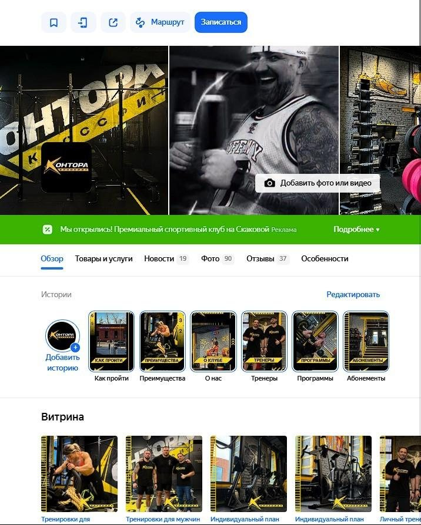

360-DIGITAL · Кейс · фитнес
Кейс агентства геомаркетинга: запуск премиум кроссфит-клуба с нуля
Задача
Показать, как агентство с нуля вывело новый клуб на Яндекс Карты и 2ГИС и дало ему поток заявок.
Сделала
Разложила работу на шесть этапов, вынесла ключевые факты в плашки, свела статистику по месяцам в таблицу и объяснила, почему премиум-лид стоит дороже.
Итог
96 квалифицированных лидов за месяц и стабильный поток даже летом.
Как привлечь 96 квалифицированных лидов за месяц для премиум кроссфит-клуба с нуля
Кейс 360-DIGITAL: продажа абонементов без сезонных просадок через геосервисы
К нам в агентство 360-DIGITAL обратился владелец успешного кроссфит-клуба с амбициозной задачей: открыть второй клуб в премиум-сегменте и с первых месяцев обеспечить стабильный поток платёжеспособных клиентов. Мы уже работали с этим предпринимателем — выстроили системный канал привлечения через геосервисы для его первого клуба. Результаты говорили сами за себя, поэтому маркетинг нового проекта он без раздумий доверил нашей команде.
Главная особенность этого проекта — мы стартовали с абсолютного нуля. Ни старых карточек, ни накопленных отзывов, ни истории. Чистый лист и высокая планка. Именно поэтому этот кейс особенно показателен: здесь вы увидите весь комплекс работ — от создания присутствия на картах до десятков квалифицированных заявок каждый месяц.
Что мы сделали: пошаговая стратегия запуска
Работу над проектом мы разбили на шесть последовательных этапов. Каждый из них критически важен — пропустишь одно звено, и вся цепочка теряет эффективность.
Этап 1. Создание карточек организации
Первым делом мы зарегистрировали и верифицировали карточки компании на ключевых геосервисах — Яндекс Картах и 2ГИС. Это фундамент: без грамотно оформленных карточек бизнес попросту невидим для тех, кто ищет фитнес-услуги поблизости.
При создании карточек мы:
-
Заполнили все доступные поля с максимальной детализацией
-
Указали точные часы работы и актуальные контакты
-
Добавили все релевантные категории и рубрики
-
Привязали официальный сайт и социальные сети

Этап 2. Разработка фирменного стиля для геосервисов
Премиум-сегмент требует соответствующей подачи. Мы с нуля разработали единый визуальный стиль карточек: подобрали цветовую палитру (чёрный и жёлтый — фирменные цвета клуба), определили типографику, создали шаблоны для историй и товаров. Визуальная целостность формирует доверие и сразу выделяет клуб на фоне конкурентов.
Этап 3. Профессиональная фотосессия по нашему ТЗ
Качественный визуал — один из главных факторов конверсии. Мы составили детальное техническое задание для фотосессии, которое охватывало все ключевые категории:
-
Входная группа — первое впечатление о клубе
-
Экстерьер — локация и окружение
-
Интерьер — залы, оборудование, раздевалки
-
Тренерский состав — профессионалы, которые работают с клиентами
-
Процесс тренировок — атмосфера и энергетика занятий
После получения материалов мы провели их SEO-оптимизацию: добавили метатеги с ключевыми словами, нанесли фирменные водяные знаки, выполнили брендирование. Это повышает видимость изображений в поиске и защищает контент от копирования.

Этап 4. SEO-оптимизированный прайс-лист
Прайс-лист на геосервисах — это не просто перечень услуг и цен. Это мощный инструмент SEO-продвижения. Мы собрали семантическое ядро по нишам «кроссфит» и «фитнес премиум-класса», а затем органично интегрировали ключевые запросы в названия и описания услуг. Теперь каждая позиция прайса работает на повышение видимости карточки.

Этап 5. Система сбора отзывов
Отзывы — это валюта доверия в digital-пространстве. Для нового клуба критически важно быстро набрать базу реальных положительных откликов. Мы выстроили комплексную систему:
-
Скрипты для администраторов — как мотивировать клиентов делиться впечатлениями
-
Автоматические рассылки после тренировок с просьбой оставить отзыв
-
QR-коды в клубе для мгновенного перехода на страницу отзывов
Со своей стороны мы обеспечиваем оперативную обработку каждого отзыва — как правило, в тот же день. Ответы формируем с SEO-ключами, что дополнительно усиливает позиции карточки в выдаче.
Этап 6. Запуск рекламной кампании в Яндекс Бизнес
После упаковки карточек мы запустили рекламное продвижение. Вот что входило в комплекс работ:
-
Настройка товарной витрины с фокусом на конверсионные предложения
-
Создание 20 уникальных рекламных объявлений с разными офферами
-
Подключение подменного номера для точного отслеживания звонков
-
Внедрение UTM-меток для сквозной аналитики вплоть до покупки абонемента

Результаты: цифры за 5,5 месяцев работы
А теперь — самое интересное. Конкретные показатели эффективности. Статистика по месяцам наглядно демонстрирует стабильность канала даже в традиционно «мёртвый» для фитнеса летний сезон.


Детальная статистика по месяцам
| Период | Целевые действия | Стоимость ЦД | Квал. лиды | Стоимость лида | Стоимость клиента |
|---|---|---|---|---|---|
| Апрель | 579 | 110 ₽ | 73 | 665 ₽ | 1 985 ₽ |
| Май | 759 | 83 ₽ | 96 | 505 ₽ | 1 476 ₽ |
| Июнь | 498 | 127 ₽ | 74 | 655 ₽ | 1 867 ₽ |
| Июль | 528 | 120 ₽ | 53 | 915 ₽ | 1 924 ₽ |
О чём говорят эти цифры
На первый взгляд стоимость квалифицированного лида кажется высокой — от 505 до 915 рублей. Но здесь важен контекст: мы работаем с премиум-сегментом, где средний чек абонемента существенно выше рынка. Аудитория премиум-фитнеса объективно уже, чем у масс-маркета, — отсюда и стоимость привлечения.
Главное достижение — стабильность. Обратите внимание: даже в июне и июле, когда большинство фитнес-клубов фиксируют обвал продаж (отпуска, переключение на уличные активности), наш канал продолжал приносить 53-74 квалифицированных лида ежемесячно. Это предсказуемая загрузка клуба и стабильный денежный поток.
Стратегия развития: что делаем дальше
Запуск и первичная упаковка — это только начало пути. Вместе с клиентом мы разработали долгосрочную стратегию развития. Ключевые направления на ближайшие месяцы:
-
Управление репутацией. Поддержание высокого рейтинга, проработка негатива, наращивание базы положительных откликов.
-
Контент-маркетинг. Регулярные публикации новостей, акций, историй успеха клиентов клуба.
-
Оптимизация рекламы. Постоянное A/B-тестирование, корректировка ставок, масштабирование работающих связок.
-
Сезонные активности. Своевременное обновление акций и спецпредложений под сезон.
-
SEO-мониторинг. Отслеживание позиций по ключевым запросам, быстрая реакция на изменения в выдаче.
-
Расширение каналов. Подключение дополнительных площадок экосистемы Яндекса.
-
SERM-продвижение. Укрепление бренда, работа с упоминаниями на внешних площадках.
-
Масштабирование. Увеличение бюджетов на каналы с доказанной эффективностью.
Геомаркетинг — это марафон, а не спринт. Первые месяцы — это фундамент. Настоящий потенциал канала раскрывается при системной работе: накопленные отзывы, отточенные объявления, растущий рейтинг — всё это со временем снижает стоимость привлечения и увеличивает поток клиентов.
Выводы
Этот кейс наглядно демонстрирует несколько важных принципов:
-
Геосервисы — полноценный канал продаж, а не просто онлайн-справочник. При системном подходе они генерируют стабильный поток горячих клиентов.
-
Комплексная работа даёт синергию. SEO, визуальный контент, отзывы и реклама усиливают друг друга.
-
Премиум-сегмент окупается. Да, стоимость лида выше — но и LTV клиента в разы больше.
-
Сезонность можно сгладить. Правильно настроенный канал работает стабильно круглый год.
Мы полностью выполнили KPI, согласованные с клиентом. План по продажам абонементов закрывается даже летом, и владелец клуба доволен результатами.
Хотите такие же результаты?
Команда 360-DIGITAL специализируется на продвижении бизнеса через геосервисы. Мы работаем с фитнес-клубами, ресторанами, медицинскими центрами, автосервисами и другими локальными бизнесами по всей России.
Что вы получите, оставив заявку:
-
Бесплатный аудит вашего присутствия на геосервисах
-
Анализ конкурентов и точек роста
-
Прогноз по количеству потенциальных обращений
-
Персональную стратегию продвижения под ваш бизнес